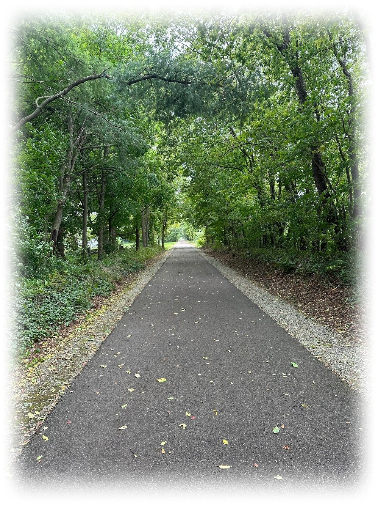

Features and Benefits
- 2 Bedrooms
- Walkable to Downtown Fredericktown
- Wide Open Space : No buildings on either side of us or behind
- Beautiful Mature Trees 🌳
- Next to community baseball ⚾ field
- No Thru Traffic
- Tucked back away from main rd
- Pet Friendly 🐈 🐶 - Pet Policy
- ALL ELECTRIC ⚡
- Washer/Dryer hook-up
- Bright security lighting 💡 (Check us out at night!)
- Maintenance free living
- Low deposit
- Grill and fire pit areas
- INCLUDED in rent price: WATER 💧, SEWER, TRASH
Nature trail (walking/running/biking) directly behind apartments.
